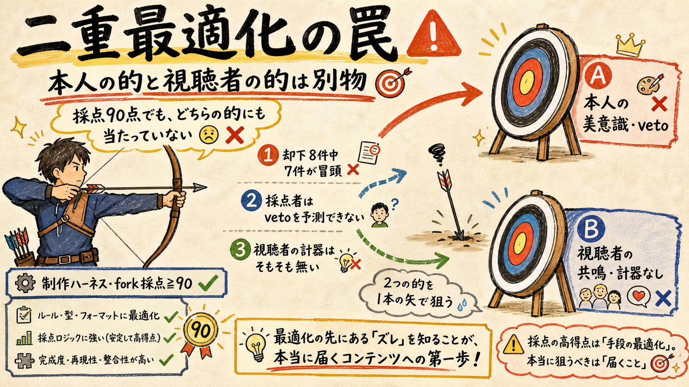
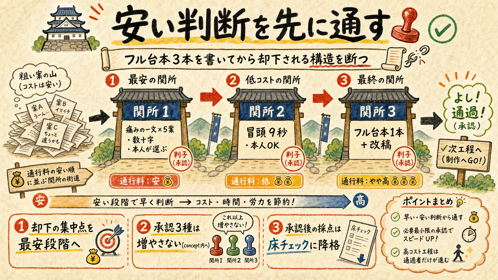
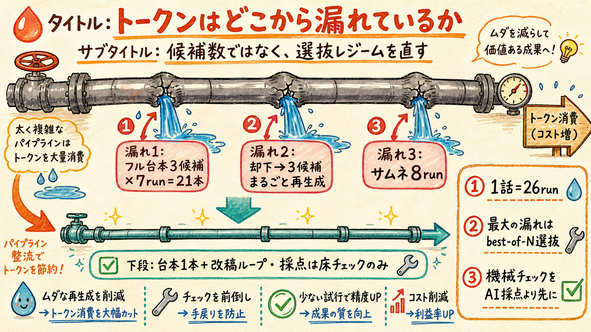
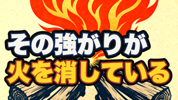

フック・再生・サムネ・トークン — 4つの不満の診断と修正案
一次データ（growth-state / 却下台帳 / creative-harness run集計 / 判定計器）で4課題を診断し、文脈ゼロの独立red-teamに叩かせた上での修正案。承認された分だけルール・採点表・configへ実装します。
TL;DR
- フック却下8件中7件が冒頭起因。fork採点≧90は本人vetoを予測できていない。根因は「痛みの一文」が実在の言葉に接地していないこと — ただし視聴者に刺さるかはショート実弾テストでしか測れない
- トークン過食の元凶は「フル台本3候補×再走」のbest-of-N選抜レジーム（ep44はessay-scriptだけでフル台本21本を生成・採点）。判断を安い順に直列化し、本人承認後の採点は床チェックへ降格する
- サムネの暗号化は採点表が構造的に生んだ（1行7字×2行＋作品名の再出現減点）。再生停滞はH58投薬済み・効果未測定 — 8/21判定は検出力ゼロなので「束」として再宣言する
01現状の一次データ — どこが本当に詰まっているか
2026-07-27実測（growth-state / yt-stats / rejections.json / run集計）
| 指標 | 実測値 | 読み |
|---|---|---|
| 本編ロング直近3本の再生 | ep40=30 / ep41=22 / ep42=60 | インプレッションがほぼ出ていない。サムネ/フック以前に「見られる土俵」に載っていない |
| ショートの再生 | 700〜1,100/本 | 唯一の流量。再生全体の93.9%がショートフィード |
| シェア率 | 0.017%（ほぼゼロ） | 「誰かに送りたい」が発生していない＝rank1（共鳴の発生率）が律速のまま |
| 変換率 | ショート0.035% / 本編0.60% | 本編は17倍効率の変換装置だが流量が無い |
| 却下台帳 | 8件中7件が冒頭フック/構成起因 | 本人vetoの集中点は一貫して「冒頭」。最新は7/26 ep45（痛み先頭転換後も却下） |
| 制作run数 | ep43=26run / ep44=26run | essay-script 7run×3候補＝フル台本21本生成+採点。thumbnail 8run。証跡95MB |
4つの不満は1本の構造で繋がっている。「本人が却下する冒頭」を「フル台本3候補を書き終えた後」に発見する工程が、トークンを食い（26run/話）、フック改善を遅らせ（却下→全再生成の周回）、サムネにも同じ採点表事故を起こしている。
02フックが刺さらない — 二重最適化の罠
証拠は全部「本人の却下」。視聴者側の計器は、まだ存在しない

fork独立採点≧90＋hook独立ゲートを通過した台本を、本人が冒頭を理由に却下する事故が反復している（ep37・ep41・ep42・ep45…）。却下の還流（rejections.json→採点プロンプト注入）を実装した後も止まっていない：
根因は2つ。①接地の欠如 — 「痛みの一文」はLLMの発想だけで生成されており、実在の人の言葉への一次情報ゲートが無い（作品事実には _facts.work ゲートがあるのに、痛みには無い。正典が計画した「痛み別素材庫」も未実装）。②視聴者計器の不在 — ロング数十再生では維持率カーブに統計的意味が無く、「視聴者に刺さったか」は今まで一度も測定できていない。
red-team指摘（最重要）: 却下台帳への最適化は「本人承認への最適化」であって「視聴者への最適化」ではない。この2つを混同したまま工程を磨くと、「本人好みだが伸びない動画を効率良く作る機械」が完成する。視聴者接地を持つ打ち手はショート実弾テスト（次節C）だけ。
03修正案（フック）— 安い順に関所を並べ直す
C（視聴者計器）＞ B（本人ゲート前倒し）＞ A（最小コーパス）の順

| 案 | 内容 | 設計上の注意（red-team反映） |
|---|---|---|
| C. ショートで フック実弾テスト | 週4本の書き下ろしショートのS01に、ロング候補の「痛みの一文」を載せて先行公開。勝った痛みだけロング制作へ（「勝った題材だけロングへ」の痛み版。S01とロング冒頭は正典が同型と明言済み） | 判定は維持率系（3秒/15秒残存・スワイプ率）。いいねは1本2〜3個でノイズ＝使わない。1痛み文=1ショート・公開後7日・既存ショート維持率中央値比、と標本設計を先に固定する |
| B. 痛み一文の concept前倒し | conceptゲートの提示物を「痛みの一文×5案＋冒頭9秒」中心の1枚に変え、concept承認＝痛み一文の選択を兼ねる。フル台本はその後に書く | owner approval 3種（concept/essay-script/final-video）は増やさない（正典整合）。却下時は「文の選定ミスか／台本での実行の失敗か」を却下台帳に区別記録し、Bの効果を検証可能にする |
| A. 最小痛み コーパス | analytics/pain-library.json をまず最小構成（rejections.jsonの本人の言葉＋承認済みフック＋自chの高評価コメント）で作り、フック生成側のプロンプトに正例/負例として注入 | 外部ソース収集・5分類の作り込みは「却下率が実際に下がる」実証後。引用義務ゲートは後付け紐づけ（引用ロンダリング）で骨抜きになるため、機械ゲート化はしない |
効果の測り方: フック却下率（rejections件数/エピソード）とconcept→台本承認までのrun数。どちらも既存台帳から機械集計できる。
04トークン過食の解剖 — 何が食っているか
候補数ではなく、選抜レジームを直す（F案）

| 工程 | 現行 | 修正後 |
|---|---|---|
| essay-script | 3候補×multi生成（subagent+codex）→ fork採点選抜 → 却下で再走（ep44実績: 7run＝フル台本21本） | 痛み一文・冒頭を本人確定した後に、フル台本1候補＋改稿ループ（max3）。vetoの集中点が冒頭確定済みなら3候補の分散投資は冗長 |
| 却下時の再走 | 3候補まるごと再生成 | 却下語を握った1候補の改稿runを既定に |
| fork採点の役割 | 常時best-of-N選抜・毎回≧90 | 本人がフックを承認した後は床チェック（≧80の健全性確認・1採点者）に降格。機械preflightをLLM採点の前に置き、落ちる候補を採点しない |
| thumbnail | 候補4×最大8run | 候補2・rubric改訂1回（§05） |
| gold較正 | ep01/ep03（H58転換前の作品）のみ | H58承認フック（ep43）を正例に追加して再calibrate（旧goldだけでは新スタイルを構造的に減点しうる） |
品質の守り: 本人承認ゲート3種は不変。削るのは「本人が選んだ後のAI同士の選抜戦」だけ。概算でessay-script段の生成+採点トークンは1/3〜1/5になる（21本→1本+改稿2〜3周）。
05サムネ — 採点表が暗号文を作っていた
直近の現物2枚（実寸360px）。作品名も題材も分からない


原因は制作者ではなく採点表。readability_360px（1行7字以内×2行＝最大14字）と complementarity（タイトルの語＝作品名を含むの再出現は1語ごとに減点）の掛け算で、「文脈ゼロの短い断片」が構造的に最高得点になる。ep37の採点表事故（92点合格を本人が全却下）と同じ型 — rubricが本人の意図と逆へ最適化していた。
- 題字は「主語＋述語で意味が立つ痛みの文」を要求（体言止め断片・暗号化は減点へ反転）
- 作品名タグ（左上小）を必須ゲート化。insight型サムネで実証済みの解で、complementarityの減点対象から除外する
- fork採点者に「タイトル併記の実寸モックを見て、初見が3秒で内容を一文で言えるか」を答えさせる
- 改訂後はgold再calibrate（rubric改訂時の義務）
位置づけ（red-team反映）: CTRはA/Bでno_lift実証済みの「効かないレバー」。これは成長施策ではなく衛生修理。コスト上限＝rubric改訂1回＋進行中エピソードの再生成のみ。ここに周回トークンを投資しない。
06再生数とH58 — 投薬済み・未測定・検出力ゼロ
「もう一回方針転換」はしない。計器を直して束で判定する
ロング22〜60再生の直接原因は、サムネでもフックでもなくインプレッションがほぼ出ていないこと（91登録・ブラウズ未点火・ショート→本編の橋はH8=refuted）。処方箋である痛み先頭転換（H58）は7/24に投薬済みだが、該当ロングは公開0本（ep43=7/28・ep44=7/31公開予定）＝まだ効果測定前。ここで別の転換を重ねるとコホートが汚染される。
red-team指摘: 8/21判定は約8本×数十再生で検出力ほぼゼロ。「差なし」が出ても何の情報も無い。判定を再宣言する — (a) CTR/登録の差でなく分母系（インプレッション数・ブラウズ流入の発生有無）を主指標に併記する。(b) 本提案の工程変更と交絡するため「H58＋新フック工程の束」として判定すると明記する。
即実装する計器修理（破壊なし・保守扱い）: ① timeseries.jsonl の欠測（07-06以降）を埋める metrics-snapshot の日次自動化（mini launchd）② pivot-cohort の metrics 自動取得 ③ 公開後の pivot-cohort add 漏れ防止（ep-next接続は実装済み・運用徹底）。
07承認事項（○×4点）
承認された項目のみ実装します。番号でご返答ください（例:「1と2は○、3は保留」）
| # | 承認事項 | 変更対象 |
|---|---|---|
| 1 | フック工程の再設計 — C: ショート実弾テスト（維持率計器・標本設計固定）＋ B: conceptゲートを「痛みの一文×5案+冒頭9秒」中心に前倒し ＋ A: 最小pain-library | docs/pivot-pain-first.md・essay-episodeスキル・conceptゲート提示物・rejections運用 |
| 2 | トークン削減 — essay-script 3候補→冒頭確定後1候補+改稿／却下時は1候補改稿run／fork採点を床チェック(≧80)へ降格／機械preflight先行／サムネ候補4→2 | config/creative-harness.json・採点運用runbook・gold再calibrate |
| 3 | サムネ衛生修理 — 題字は主語+述語の文／作品名タグ必須／タイトル併記モック採点／コスト上限付き | analytics/eval-schemas/thumbnail.json・make-thumbnail系の題字仕様 |
| 4 | H58判定の再宣言 — 分母系指標の併記＋「H58+新工程の束」として判定＋計器修理3点 | docs/pivot-pain-first.md判定節・pivot-cohort.mjs・metrics-snapshot自動化 |
結論
- 優先順位: C（ショート実弾テスト）＞ B（痛み一文のconcept前倒し）＞ F（トークン削減）＞ A（最小コーパス）＞ E（サムネ衛生修理）＞ D（H58束判定宣言）
- どの案も「ロング数十再生」を直接は動かさない。動くとすれば共鳴の発生率（rank1）からで、その視聴者計器を持つのはCだけ
- H58コホート（7/28・7/31公開）は止めない。承認された項目のみ、正典・採点表・configへ実装する